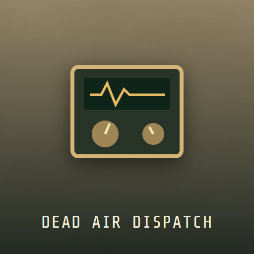

<- all projects

Dead Air Dispatch
PC
Volume
Live
Tune the signal, solve the call and decide who makes it through the night.
The city has gone dark, but a station demolished twenty years ago is still transmitting. Work the midnight radio desk: find the carrier and turn the phase to lock a signal, decode each caller's three-digit code from the archive slip, and send your last responders to the North Tower, the Harbor or the Old Station. You have fewer teams than calls, and saving one caller may expose another. There are 7 story shifts, 30 signal puzzles and 12 callers, with 4 endings shaped by trust and by what you put on the record, plus a daily challenge and an endless ladder.